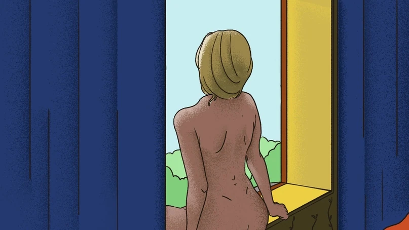

Mr.Nobody заводит дружбу с наркодилером, которого «принимали» как террориста, очищается музыкой и получает по лицу за пьяное остроумие
Я шел по безлюдной улице. Говоря откровенно, безлюдна была не только улица — я знал, что весь город такой. На мне — футболка, кроссовки, кепка и рюкзак на плечах. Штанов и нижнего белья не было, но я не испытывал ни малейшего дискомфорта по этому поводу. Каждое дуновение ветра ощущалось голой кожей от пояса до обуви, а я думал, что и не должен смущаться, ведь это — мой способ самовыражения. Через несколько минут такой прогулки вдруг пришло понимание: моего перформанса никто не увидит. И от этого стало мучительно больно.
За секунды моя уверенной сменилась какой-то капризностью, даже захотелось заплакать. Мне нужно было прикрыться, но футболка оказалась слишком короткой. Внезапно послышался звук приближающегося вертолета и внутри меня забрезжила надежда. Это оказался маленький летательный аппарат, с виду напоминающий современный гирокоптер. Подбежав, я схватил его руками и закричал:
— Юра, Юра, ты меня слышишь?!
Гирокоптер на секунду закрутил лопастями в знак согласия.
— Юра, штаны! Штаны! ШТАНЫ!

— Штаны, тупой ты хуесос, штаны!
Дальше — удар, чей-то возглас, напоминающий нечто среднее между «ай» и «ой», звук падающего тела. И мое медленно ползущее осознание: я проснулся в лагере.
— Прости, Вадим, я думал, что нужны шорты! — донесся крик с конца секции.
Я приподнялся на кровати и увидел главного спортсмена, Вадима, который стоял возле медленно поднимающегося с пола шныря.
— Не надо думать, долбоеб, надо делать. У тебя минута, и чтобы штаны были тут! — прокричал качок, краснея от злости.
Шнырь пролетел в сторону умывальника. По крайней мере, хоть у кого-то день начался хуже, чем у меня.
Будни неслись с бешеной скоростью. Я стал завсегдатаем местной библиотеки — в отличие от чтива в тюрьмах, тут можно было найти что-то действительно стоящее: Ахматова, Зощенко, Хантер Томпсон, Буковски, Бродский, Мандельштам, Фицджеральд, Набоков, Сэлинджер и к тому же масса книг в оранжевых обложках (кажется, издание «Альтернатива») — Уэлш, Паланик и прочие.
Постепенно я начал обрастать знакомствами, и у меня даже появились двое друзей. Первого звали Дима. Ему дали восемь лет за продажу амфетамина. На самом деле он не только сбывал, но и варил. На съемной квартире была целая лаборатория. Наркотика стало так много, и Дима чувствовал такую безнаказанность, что умудрился расплачиваться «феном» с официантками в кое-каких общепитах средней руки. Менты принимали его, как в блокбастерах, будто он — террорист.
Дима отдыхал со своей девушкой дома. Пока она сидела за компьютером, он в одних трусах вышел покурить на балкон. Делая первую затяжку, наш герой заметил во дворе два фургона. Делая вторую, услышал какие-то странные звуки со стороны лестничной клетки, прямо под дверью.
Он все понял. Пошел в зал (напротив входа в квартиру) и встал на колени. Дима не успел заложить руки за голову — с диким грохотом дверь рухнула в прихожую. То, что Дмитрий стоял на коленях в одном нижнем белье, не помешало одному из ментов эпично влететь в голову наркодилера с двух ног в крепких служебных берцах. В себя Дима пришел от удара электрошокером. Его руки были зафиксированы за спиной пластиковой строительной стяжкой.
— Где наркотики? — прокричал мент в маске, подкрепив свой вопрос ударом приклада прямо в голову.
— На балконе, в бочке, — ответил Дима.

Двое других легавых пошли туда и через минуту вернулись с контейнером амфетамина в руках.
— Где еще? — не унимался мусор. На этот раз последовал удар шокером.
— Больше нет, — прохрипел Дмитрий. — Я вам все показал!
— Ах нет, пидарас?!
Теперь сильно ударили ногой по ребрам.
— Нет, правда! — Дима был готов отдать им все что нужно, но он уже это сделал.
— Если ты не скажешь, где вся наркота, мы выебем твою телку дубинкой, а ты будешь смотреть, — в доказательство из комнаты вывели перепуганную Димину девушку с заплаканными глазами. Рассказывая эту историю, Дима признался, что никогда девушка не казалась ему такой красивой, как в тот момент.
— Блять, да клянусь вам, у меня больше ничего нет! Не трогайте ее, не трогайте!
Дальше — удар прикладом. Очнулся Дима уже в изоляторе временного содержания. Рядом лежало постановление об аресте.
Моего второго приятеля звали Денис. Его история была менее захватывающей, чем история Димы, но более нелепой. Денис кутил с тремя своими друзьями и четырьмя проститутками у себя дома. Алкоголь, наркотики, музыка, беспорядочный секс и веселье, продолжавшееся двое суток.
Утром третьего дня Денис сидел со своим другом на кухне, попивая кофе. Голова его еще шумела с похмелья, поэтому было тяжело вникать в рассказ человека напротив. Тот перекрылся ЛСД прошлой ночью и, когда ему все-таки удалось задремать, он увидел сон — силуэт человека, который разбежался и выпрыгнул из окна.
— Бля, Артем, давай хоть сегодня без депрессняка, — сказал Денис.
Они, конечно, знали, что никто из окна не выпрыгнул — все участники тусовки лежали в одной комнате, когда ребята проснулись.
Допили кофе и пошли в гостиную. На подоконнике, спиной к вошедшим, сидела одна из проституток. Ноги свешивались на улицу. Ветер раздувал волосы. Парни даже не успели ничего произнести — девушка нырнула вниз и послышался глухой удар. Денис подбежал к окну и выглянул на улицу — в луже крови на асфальте лежало тело, а вокруг уже стояли зеваки. Девушка пролетела одиннадцать этажей. Денис кричал что-то бессмысленное вроде:
— Блять, ебаный рот, блять, да ну на хуй, господи, блять…
Артем же бродил по квартире с отсутствующим видом, то и дело хватаясь за голову и нашептывая:
— Вещий сон… вещий сон… вещий сон…

Адвокат сказал, что «грузиться» придется кому-то одному, иначе будет гораздо хуже. Взять «вину» на себя должен был тот, кто последний спал с этой девушкой. Или тот, кого видели в окне прохожие. В обоих случаях этим человеком был Денис. Он получил шесть лет — не так уж много за «умышленное убийство».
Общался я в основном только с Денисом и Димой. Так как у меня на воле почти никого не было, ребята поддерживали по возможности. Да и я сильно не наседал — отдавал им свой «лимит» (каждому осужденному на строгом режиме положена передача раз в три месяца, весом до 20 килограмм) — в том числе на мои ФИО их родственники передавали продукты.
У Дениса было куплено «добро» на связь. Оказалось, можно пойти к самому главному спортсмену (он же — завхоз жилой зоны) и за деньги договориться, чтобы у тебя был личный телефон. Прайс — от двадцати пяти тысяч рублей до пятидесяти. Денис отдал тридцать. У него было два телефона — одним, Nokia C5, он пользовался днем (телефон маленький и дешевый — обыски чаще всего проходили в дневное время), а вторым, каким-то Samsung Galaxy — ночью.
Когда Денис уходил на длительное свидание, он оставлял нам с Димой оба телефона. Тогда в интернете у меня не было особых занятий. Я старался понять, что пропустил за эти два года. И заодно научился прошивать смартфоны. Со временем за мной закрепилась репутация разбирающегося в этих делах человека, и иногда мне приносили телефоны, чтобы я что-то починил. Мои услуги оплачивались сигаретами, кофе и сладким (деньгами брать было нельзя — это считалось «барыжничеством»).
Немного сигарет я откладывал, чтобы потом отдать местному «барыге». Это был зек, который продавал вообще все (как говорил он сам — «от гондона до батона»). Стеклянные кружки, наушники, шоколадки, кроссовки... Именно у этого продавца я хотел купить mp3-плеер. Расчеты в колонии производились на киви-кошельки. Плеер маленький, без экрана — за такой барыга назначил три тысячи рублей. Половину перевел мой друг Дима, а вторую я решил «закрыть» отложенными сигаретами.
Когда мне в руки попадал телефон с интернетом, я скачивал музыку на флешку. Наверное, mp3-плеер был моим лучшим вложением в жизни. Иногда по ночам мне удавалось пробраться через окно за барак. Я сидел в беседке под большой липой и часами слушал любимые песни. Hurt Джонни Кэша, My body is a cage Питера Габриэля и группы Modest Mouse трогали меня еще сильнее, чем пару лет назад. Когда я слушал Sigur Ros, хотелось плакать от этой красоты. Каждый раз я сбрасывал с себя все, что происходило днем — будто смывал с тела налипшую грязь. Возвращался из беседки всегда немного другим: нелепость и бессмысленность того, что было вокруг меня, почему-то становились очевиднее и больше не могли затронуть ничего внутри. Получалось как с одним из героев «Большого куша» — сначала три парня в масках и с пистолетами угрожают мне, а потом я вижу надписи «муляж» на стволах и угрозы уже не чувствую.
Что только не продавалось в этой колонии! Можно было купить «право» ходить в общую душевую каждый день (изначально ее разрешалось посещать только два раза в неделю) — это стоило три тысячи рублей в месяц. Неподалеку от футбольного поля располагался «спортгородок» — нечто вроде спортзала под открытым небом — чтобы заниматься там, нужно было платить по четыре тысячи в месяц. Однажды я видел, как возле столовой разгружают большую машину с продуктами: сырая картошка, капуста и прочие овощи, свежее мясо и куриные яйца. Однако в обычной баланде можно было выловить разве что мохнатую свиную шкурку (некоторые даже такое считали удачей). Позднее я узнал: в столовой можно приобретать обеды. Всего пять тысяч рублей в месяц, и тебе приносили два небольших контейнера — один с супом, а второй — с каким-нибудь другим блюдом. Стало понятно, куда шло содержимое КамАЗа с продуктами.
Прошло полгода. Я старался жить тихо и спокойно: не влезал в истории и довольствовался тем, что имел. Видимо, расслабился, и по этой причине произошло следующее.
Дима пошел на длительное свидание с какой-то девушкой (за шесть тысяч рублей можно было пойти на свиданку с гражданской женой) и привез около пяти килограмм белого винограда. Мы решили сделать вино (разумеется, такое, какое могли). Насыпали виноград в большой контейнер и размяли деревянной колотушкой, а затем поставили в угол под кровать. Через три недели оттуда уже несло алкоголем. Дальше Дима проводил манипуляции, в которые я не лез, — принес какие-то пластиковые трубки, бутылки и что-то химичил. В итоге у нас получилось около двух с половиной литров вина. Немного мутного, но пьянящего.
От вина меня всегда быстро развозило, а тут сказался еще и долгий период воздержания. По какой-то причине мне захотелось побриться. Я вышел на умывальник, встал напротив зеркала и начал намыливать свою пьяную рожу. Неподалеку брился один из приближенных к спортсменам парень. Он был, видимо, на позитивной волне.
— Оу, бриться начал, мужчиной стал, да?
Я тоже был на позитивной волне:
— Знаешь, как ты поймешь, что я стал мужчиной?
— И как же? — с улыбкой спросил он.
— Когда ты зайдешь в спальню и увидишь меня на своей жене.
Его брови угрожающе сдвинулись, челюсть сжалась. Подозреваю — как и его кулаки.
— И я скажу тебе: в следующий раз ПОСТУЧИСЬ, — спокойно произнес я.
Я успел повернуться к зеркалу. На моем лице застыла ехидная ухмылка — последний панчлайн показался мне впечатляющим. Я даже не думал, что у этого типа действительно есть жена.
Он вложился в удар всем телом. Пока его оттаскивали (хотя парень не слишком сопротивлялся), я смог встать на ноги и посмотрел в зеркало. Никогда не считал себя красавцем, но увидев, что большая часть моего носа лежит где-то под глазом, я подумал, что раньше прямо блистал красотой. Нос буквально размазали по лицу. Я мигом протрезвел. В голове проскочила мысль: неужели теперь ТАК на всю жизнь? Хотелось убить ублюдка.

Ко мне подошел Дед. Придерживая мой затылок одной рукой, резким движением второй он вправил нос обратно. В голове омерзительно хрустнуло, будто я наступил ногой в мокрые чипсы. В глазах потемнело, но сознание я не потерял.
— Ну вот, — Дед улыбнулся. — Как новенький.
Нос действительно встал на место. Только из ноздрей показались две тонкие струйки крови. С этого момента я остроумничал только со своими. И вино больше не пил.